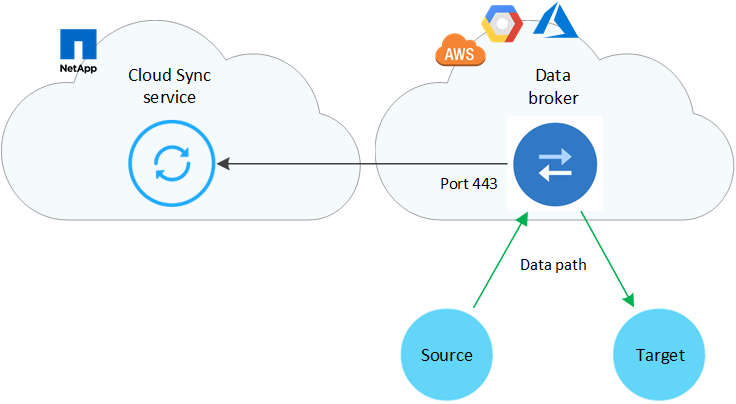
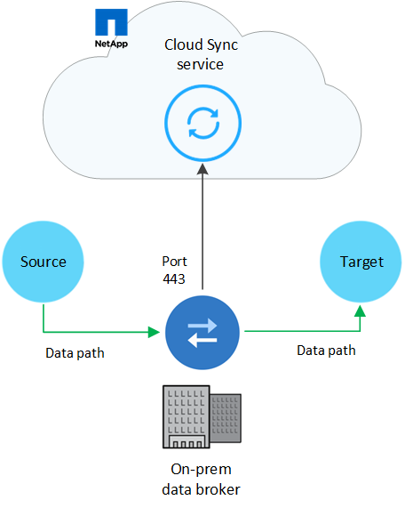

Versionshinweise
Versionshinweise
Netzwerkübersicht für Cloud Sync
 Änderungen vorschlagen
Änderungen vorschlagen
Networking for Cloud Sync umfasst die Konnektivität zwischen dem Daten-Broker und den Quell- und Zielstandorten sowie eine ausgehende Internetverbindung vom Daten-Broker über Port 443.
Speicherort für Daten-Broker
Installieren Sie den Daten-Broker in der Cloud oder vor Ort.
Data Broker in der Cloud
Die folgende Abbildung zeigt den Daten-Broker, der in der Cloud ausgeführt wird, entweder in AWS, GCP oder Azure. Quelle und Ziel können sich an jedem beliebigen Standort befinden, solange eine Verbindung zum Daten-Broker besteht. Sie haben beispielsweise eine VPN-Verbindung zwischen Ihrem Datacenter und Ihrem Cloud-Provider.

|
Wenn Cloud Sync den Data Broker in AWS, Azure oder GCP implementiert, erstellt es eine Sicherheitsgruppe, die die erforderliche ausgehende Kommunikation ermöglicht. |

Data Broker vor Ort
Die folgende Abbildung zeigt den Data Broker, der in einem Datacenter auf dem Prem ausgeführt wird. Quelle und Ziel können sich an jedem beliebigen Standort befinden, solange die Verbindung zum Daten-Broker besteht.

Netzwerkanforderungen
-
Quelle und Ziel müssen über eine Netzwerkverbindung zum Daten-Broker verfügen.
Wenn sich beispielsweise ein NFS-Server in Ihrem Datacenter befindet und der Data Broker in AWS ist, benötigen Sie eine Netzwerkverbindung (VPN oder Direct Connect) von Ihrem Netzwerk zum VPC.
-
Der Daten-Broker benötigt eine ausgehende Internetverbindung, damit er den Cloud Sync Service für Aufgaben über Port 443 abfragen kann.
-
NetApp empfiehlt die Konfiguration des Quell-, Ziel- und Daten-Brokers für die Verwendung eines NTP-Services (Network Time Protocol). Die Zeitdifferenz zwischen den drei Komponenten darf 5 Minuten nicht überschreiten.
Netzwerkendpunkte
Der NetApp Data Broker benötigt ausgehenden Internetzugang über Port 443, um mit dem Cloud Sync Service zu kommunizieren und einige andere Services und Repositorys zu kontaktieren. Darüber hinaus erfordert Ihr lokaler Webbrowser für bestimmte Aktionen Zugriff auf Endpunkte. Wenn Sie die ausgehende Konnektivität beschränken müssen, lesen Sie die folgende Liste der Endpunkte, wenn Sie Ihre Firewall für ausgehenden Datenverkehr konfigurieren.
Data Broker-Endpunkte
Der Daten-Broker kontaktiert die folgenden Endpunkte:
| Endpunkte | Zweck |
|---|---|
Olcentgbl.trafficmanager.net:443 |
Um ein Repository für die Aktualisierung von CentOS-Paketen für den Data Broker-Host zu kontaktieren. Dieser Endpunkt wird nur kontaktiert, wenn Sie den Data Broker manuell auf einem CentOS Host installieren. |
Rpm.nodesource.com:443 registry.npmjs.org/:443 nodejs.org/:443 |
Um Repositorys für die Aktualisierung von Node.js, NPM und anderen Drittanbieter-Paketen zu kontaktieren, die in der Entwicklung verwendet werden. |
Tgz.pm2.io:443 |
Zugriff auf ein Repository zur Aktualisierung von PM2, einem Drittanbieter-Paket zur Überwachung von Cloud Sync. |
Sqs.us-east-1.amazonaws.com:443 kinesis.us-east-1.amazonaws.com:443 |
Um die AWS-Services zu kontaktieren, die Cloud Sync für den Betrieb verwendet (Dateien in Warteschlange stellen, Aktionen registrieren und Aktualisierungen an den Daten-Broker senden). |
s3.region.amazonaws.com:443 Beispiel: s3.us-east-2.amazonaws.com:443https://docs.aws.amazon.com/general/latest/gr/rande.html#s3_region["Eine Liste der S3-Endpunkte finden Sie in der AWS Dokumentation"^] |
Um Amazon S3 zu kontaktieren, wenn eine Synchronisierungsbeziehung einen S3-Bucket enthält. |
Cf.cloudsync.netapp.com:443 repo.cloudsync.netapp.com:443 |
Um den Cloud Sync Service zu kontaktieren. |
Support.netapp.com:443 |
Um den NetApp Support zu kontaktieren, wenn eine Byol Lizenz für Synchronisierungsbeziehungen verwendet wird. |
fedoraproject.org:443 |
Installation von 7 z auf der virtuellen Maschine des Datenmakers während der Installation und Aktualisierungen 7z ist erforderlich, um AutoSupport Meldungen an den technischen Support von NetApp zu senden. |
Webbrowser-Endpunkte
Ihr Webbrowser benötigt Zugriff auf den folgenden Endpunkt, um Protokolle zur Fehlerbehebung herunterzuladen:
logs.cloudsync.netapp.com:443